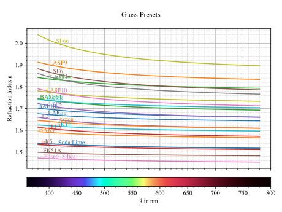
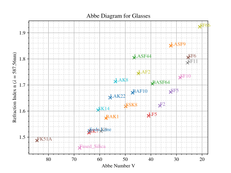
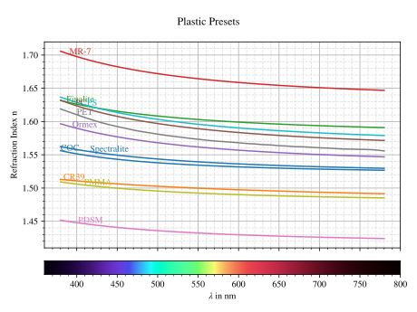
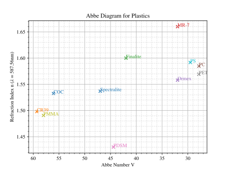
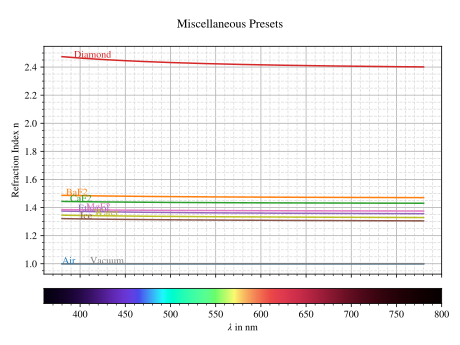
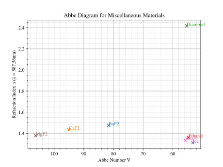

4.6. Refractive Indices#
4.6.1. Defining the Index#
Constant
In the simplest case a constant (wavelength-independent) refractive index is defined as:
n = ot.RefractionIndex("Constant", n=1.54)
By Abbe Number
In many cases materials are characterized by the index at a center wavelength and the Abbe number only. However, materials with these same quantities can still differ slightly.
n = ot.RefractionIndex("Abbe", n=1.5, V=32)
Details on how the model is estimated are found in Section 5.4.2.1.
You can also specify the wavelength combination, for which n and V are specified:
n = ot.RefractionIndex("Abbe", n=1.5, V=32, lines=ot.presets.spectral_lines.FeC)
Common Index Models
The subsequent equations describe common refractive index models used in simulation software. They are taken from [1] and [2]. A comprehensive list of different index models is found in [3].
Generally, all coefficients must be given in powers of µm, while the same is true for the wavelength input.
Name |
Equation |
|---|---|
Cauchy |
(4.3)#\[n = c_0 + \frac{c_1}{\lambda^2} + \frac{c_2}{\lambda^4} + \frac{c_3}{\lambda^6}\]
|
Conrady |
(4.4)#\[n = c_0+ \frac{c_1} {\lambda} + \frac{c_2} {\lambda^{3.5}}\]
|
Extended |
(4.5)#\[n^2 = c_0+c_1 \lambda^2+ \frac{c_2} {\lambda^{2}}+ \frac{c_3} {\lambda^{4}}+ \frac{c_4} {\lambda^{6}}+ \frac{c_5} {\lambda^{8}}+ \frac{c_6} {\lambda^{10}}+\frac{c_7} {\lambda^{12}}\]
|
Extended2 |
(4.6)#\[n^2 = c_0+c_1 \lambda^2+ \frac{c_2} {\lambda^{2}}+ \frac{c_3} {\lambda^{4}}+\frac{c_4} {\lambda^{6}}+\frac{c_5} {\lambda^{8}}+c_6 \lambda^4+c_7 \lambda^6\]
|
Handbook of Optics 1 |
(4.7)#\[n^2 = c_0+\frac{c_1}{\lambda^2-c_2}-c_3 \lambda^2\]
|
Handbook of Optics 2 |
(4.8)#\[n^2 = c_0+\frac{c_1 \lambda^2}{\lambda^2-c_2}-c_3 \lambda^2\]
|
Herzberger |
(4.9)#\[\begin{split}\begin{align}
n =&~ c_0+c_1 L+c_2 L^2+c_3 \lambda^2+c_4 \lambda^4+c_5 \lambda^6 \\
&\text{ with } L= \frac{1} {\lambda^2-0.028 \mathrm{\,µm}^2}
\end{align}\end{split}\]
|
Sellmeier1 |
(4.10)#\[n^2 = 1+\frac{c_0 \lambda^2}{\lambda^2-c_1}+\frac{c_2 \lambda^2}{\lambda^2-c_3}+\frac{c_4 \lambda^2}{\lambda^2-c_5}\]
|
Sellmeier2 |
(4.11)#\[n^2 = 1+c_0+\frac{c_1 \lambda^2}{\lambda^2-c_2^2}+\frac{c_3}{\lambda^2-c_4^2}\]
|
Sellmeier3 |
(4.12)#\[n^2 = 1+\frac{c_0 \lambda^2}{\lambda^2-c_1}+\frac{c_2 \lambda^2}{\lambda^2-c_3}+\frac{c_4 \lambda^2}{\lambda^2-c_5}+\frac{c_6 \lambda^2}{\lambda^2-c_7}\]
|
Sellmeier4 |
(4.13)#\[n^2 = c_0+\frac{c_1 \lambda^2}{\lambda^2-c_2}+\frac{c_3 \lambda^2}{\lambda^2-c_4}\]
|
Sellmeier5 |
(4.14)#\[n^2 = 1+\frac{c_0 \lambda^2}{\lambda^2-c_1}+\frac{c_2 \lambda^2}{\lambda^2-c_3}+\frac{c_4 \lambda^2}{\lambda^2-c_5}+\frac{c_6 \lambda^2}{\lambda^2-c_7}+\frac{c_8 \lambda^2}{\lambda^2-c_9}\]
|
Schott |
(4.15)#\[n^2 = c_0+c_1 \lambda^2+\frac{c_2}{ \lambda^{2}}+\frac{c_3} {\lambda^{4}}+\frac{c_4} {\lambda^{6}}+\frac{c_5} {\lambda^{8}}\]
|
In the case of the Schott model, the initialization looks as follows:
n = ot.RefractionIndex("Schott", coeff=[2.13e-06, 1.65e-08, -6.98e-11, 1.02e-06, 6.56e-10, 0.208])
User Data
With type "Data" a wavelength and index vector should be provided.
Values in-between are interpolated linearly.
wls = np.linspace(380, 780, 10)
vals = np.array([1.6, 1.58, 1.55, 1.54, 1.535, 1.532, 1.531, 1.53, 1.529, 1.528])
n = ot.RefractionIndex("Data", wls=wls, vals=vals)
User Function
optrace supports custom user functions for the refractive index. The function takes one parameter, which is a wavelength numpy array with wavelengths in nanometers.
n = ot.RefractionIndex("Function", func=lambda wl: 1.6 - 1e-4*wl)
When providing a function with multiple parameters, you can use the func_args parameter.
n = ot.RefractionIndex("Function", func=lambda wl, n0: n0 - 1e-4*wl, func_args=dict(n0=1.6))
4.6.2. Getting the Index Values#
The refractive index values are calculated when calling the refractive index object with a wavelength vector. The call returns a vector of the same shape as the input.
>>> n = ot.RefractionIndex("Abbe", n=1.543, V=62.1)
>>> wl = np.linspace(380, 780, 5)
>>> n(wl)
array([1.56237795, 1.54967655, 1.54334454, 1.5397121 , 1.53742915])
4.6.3. Abbe Number#
With a refractive index object at hand the Abbe number can be calculated with
>>> n = ot.presets.refraction_index.LAF2
>>> n.abbe_number()
44.850483919254984
Alternatively the function can be called with a different spectral line combination from ot.presets.spectral_lines:
>>> n.abbe_number(ot.presets.spectral_lines.F_eC_)
44.57150709341499
Or specify a user defined list of three wavelengths:
>>> n.abbe_number([450, 580, 680])
30.59379412865849
You can also check if a medium is dispersive by calling
>>> print(n.is_dispersive())
True
A list of predefined lines can be found in Section 4.7.5.
4.6.4. Loading material catalogues (.agf)#
optrace can also load .agf catalogue files containing different materials.
The function ot.load_agf requires a file path and returns a dictionary of media, with the key being the name and the value being the refractive index object.
For instance, loading the Schott catalogue and accessing the material N-LAF21 can be done as follows:
n_schott = ot.load_agf("schott.agf")
n_laf21 = n_schott["N-LAF21"]
Different .agf files are found in this repository or this one.
Information on the file format can be found here and and here.
4.6.5. Plotting#
4.6.6. Presets#
optrace comes with multiple material presets, which can be accessed using ot.presets.refractive_index.<name>, where <name> is the material name.
The materials are also grouped into multiple lists ot.presets.refractive_index.glasses, ot.presets.refractive_index.plastics, ot.presets.refractive_index.misc.
These groups are plotted below in an index and an Abbe plot.
 Fig. 4.20 Refraction index curves for different glass presets.# |
 Fig. 4.21 Abbe diagram for different glass presets.# |
 Fig. 4.22 Refraction index curves for different plastic presets.# |
 Fig. 4.23 Abbe diagram for different plastic presets.# |
 Fig. 4.24 Refraction index curves for miscellaneous presets.# |
 Fig. 4.25 Abbe diagram for miscellaneous presets. Air and Vacuum are missing here, because they are modelled without dispersion.# |
{kind=link}
{kind=link}
{kind=link}
{kind=link}
{kind=link}
{kind=link}
References